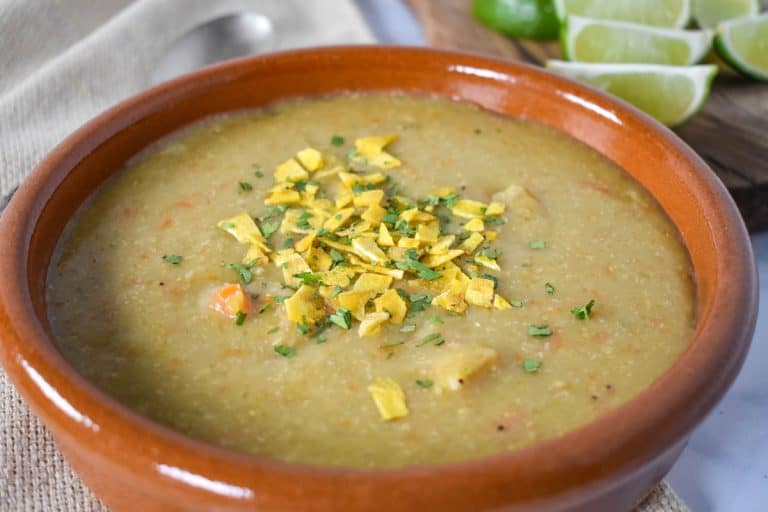

plantain soup

Soup with plenty of Vitamin C
Sopa de platano (plantain soup) is a thick, starchy soup that's popular in Caribbean cuisine.
Ingredients
- 2 tablespoons Olive Oil
- 1 Small Onion finely diced
- ¾ – 1 cup Diced Carrots 1 – 2 carrots, depending on their size
- 1 Celery Rib finely diced
- 3-4 Garlic Cloves minced
- ½ teaspoon Cumin
- 2 Large Green Plantains peeled and cut into ½ inch rounds
- 6 cups Chicken Broth
- 1 Bay Leaf
- Salt to taste if needed
- Chopped Cilantro or Parsley for garnish optional
- Crushed Plantain Chips for garnish optional
- Limes for serving optional
Instructions:
- Heat the olive oil in a large pot over medium heat. When the oil is hot, but not smoking, add the onions, carrots and celery. Cook the vegetables for 5 minutes, stirring frequently.
- Add the garlic and cumin and cook for 1 minute, stirring almost constantly.
- Add the sliced plantains and give everything a good stir.
- Add the chicken broth and the bay leaf and stir well.
- Raise the heat to high and bring the liquid to a boil.
- Lower the heat to medium-low, cover and cook the soup for 35-40 minutes, stirring occasionally. The plantains should break apart when pressed with a wood spoon, if they do not; continue cooking for 10 minutes and check again.
- Remove and discard the bay leaf.
- Taste the soup and add salt if needed. As a reference we did not add any extra salt to ours.
- Process the soup with an immersion blender or potato masher, if desired. Don’t process all the way, leave the soup a little chunky.
- Garnish the soup with chopped cilantro (or parsley) and crushed plantain chips, if desired.